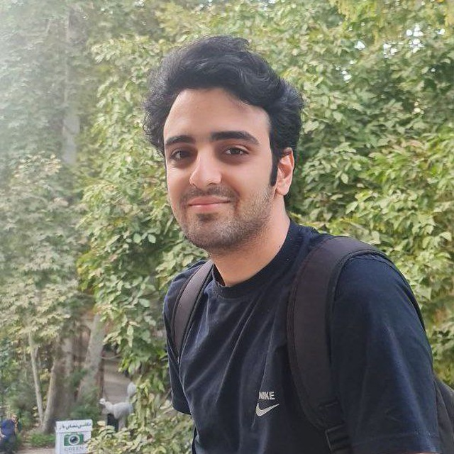

My name is Mehrdad
I tend to follow my curiosity wherever it leads.
I've bounced between deep learning, algorithms, database systems, and plenty of other rabbit holes.
I enjoy reinventing the wheel and implementing systems from scratch to fully understand them.
I am currently working on improving the supply chain at Picnic. I previously worked on predicting estimated times of arrival at Snapp,
and on robustness of deep learning models at Sharif University of Technology.
GitHub /
LinkedIn /
Mail

Jul 2026Present
I work as a software engineer at Picnic.
Picnic is an online grocery service that delivers orders from
highly automated fulfilment centres using its own delivery fleet.
I work on automated warehouse management, building the systems that
orchestrate the flow of goods through our automated fulfilment centres.
Jan 2023May 2026
I worked as a software engineer at Snapp.
Snapp is the leading company in providing online taxi services with over 30 million users in Iran.
As part of the Routing team, we were responsible for providing estimated time of arrival (ETA) and
navigation services.
Our work spanned from calculating and predicting speeds from raw GPS probes to
serving deep learning models on production. We built a highly-adaptive, and traffic-aware ETA pipeline
that is competitive with all third party providers both in terms of accuracy and speed.
Jan 2024Dec 2024
I worked on robustness of deep learning models at the Machine Learning Laboratory,
Sharif University of Technology under the supervision of Dr. Mahdieh Soleymani.
You can read more about it here.
Sep 2020Jan 2025
BSc at the Amirkabir University of Technology (Tehran Polytechnic) majoring in computer science.
I ranked in the top three students on multiple occasions due to cumulative GPA. I graded 18.79 / 20.
teaching
I was fortunate to be a teaching assistant for the following courses:
- Deep Learning (graduate course), Spring 2025, Sharif University of Technology
- Computational Geometry, Fall 2024, Amirkabir University of Technology
- Numerical Linear Algebra, Fall 2024, Amirkabir University of Technology
pet projects
tiny-lsm
is an LSM-tree key-value storage engine written in rust, built on top of
mini-lsm and fully rewritten with async I/O using tokio.
It supports MVCC with serializable transactions, leveled and tiered compaction.
bustub
is an educational relational database management system built at CMU. I implemented all the assignments of the project
including thread-safe implementation of buffer pool manager, B+tree index, and query execution layer. The code is not publicly available due to course policies.
camel
is an interpreted programming language written in go. It supports arrays, dictionaries, functions, and closures.
jclash
is a clone of the game Clash Royale in Java. This was the final project of Advanced Programming course at Amirkabir University of Technology
and my first real experience with programming.
coyote
is a project that visualizes and compares Dijkstra, A*, and ATL algorithms to compute the shortest path on a road network.
I implemented this for fun when I began working at Snapp. The end goal was to understand shortest path algorithms in more depth.
visual cryptography
is a perfectly secure cryptographic scheme, which can decode concealed images without any cryptographic computations.
I implemented this technique as an exercise in go programming language.
misc unsorted
- I have a brother. We are non-identical twins
- In my free time, I go running, hiking, or climbing.
- I listen to white noise when I work.
- This website design was inspired by Andrej Karpathy.